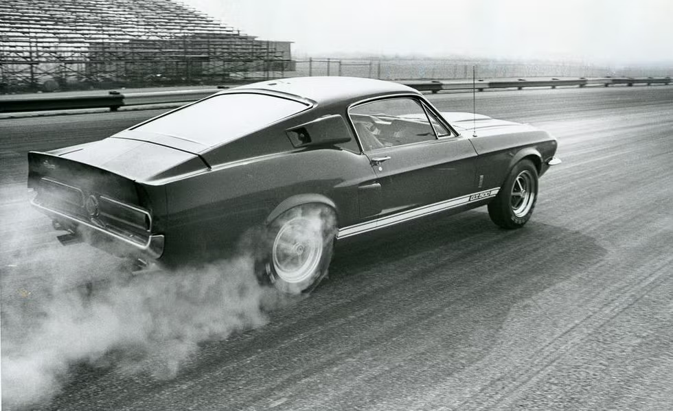

The old corollary to that old adage, “There’s no substitute for cubic inches,” is “except rectangular money”–and who would know better than Carroll Shelby. When the Cobra 289 peaked out on the racetrack, there were several ways of making it go faster–most expensive, one cheap. One of the more expensive ways was the Daytona coupe body. The late Ken Miles found a better way. At Sebring in 1964, he shoehorned a Ford 427 NASCARized engine into a Cobra roadster. The experiment came to rest, sorely bent, against a palm tree, but Miles persisted. By the end of the season, at Nassau, he had another one bolted together. It blew up, but the die was cast. Early in 1965, Shelby announced the Cobra II with a 427 cu. in. V-8 replacing the 289. That June, at Le Mans, two of Ford’s rear-engined GT prototypes appeared with the big 427 instead of the 289. The Europeans hooted and jeered at the bulky, heavy, unsophisticated V-8 with its pushrods and single four-barrel carburetor. A year later, Ford 427s swept the first three places at the French classic, with Shelby’s two entries dead-heating the final lap. What the 427s had beaten was a team of 270 cu. in. Ferrari V-12s with multiple carburetion and four overhead camshafts. The Italian engine developed almost as much horsepower as the Ford–425 hp vs. 485–but it was much more tautly stressed and, therefore, fragile. Which is the whole point of 7-liter Fords, Cobras, and now, Shelby Mustangs.

For '67, Ford offered the Mustang with their tried-and-true 390 V-8, which has a bore and stroke of 4.05
x
3. 78 inches. Ford also builds a 428 V-8 on the same block with a bore and stroke of 4.13 x 3.98 inches.
Why
not, reasoned Shelby, use this engine in the '67 Shelby Mustang? Why not indeed. The car is called the
GT
500 and its engine is called the Cobra Le Mans.
Somebody is telling a little white half-truth.
Please note that the Cobra Le Mans engine displaces 428 cubic inches. That sounds like a hair better
than
the 427. In fact, they are two entirely different engines. Both have the same external dimensions, but
the
427 is more oversquare, with a bore and stroke of 4.23 x 3. 78. The 427 is a racing engine, full of the
kind
of intestinal fortitude that makes it capable of enduring 500 miles at Daytona and 24 hours at Le Mans.
The
428 is a passenger-car engine, and nearly $1000 cheaper than the 427. Few people would be happy with the
427
unless they were racing it. It’s noisy, balky, and an oil burner at normal highway speeds.
The GT 500 is not a racing car, although but for a few subtle differences its engine is the same as the
one that propelled Shelby’s Fords to victory at Le Mans. Seven liters in a Mustang! The early GT 500
engineering prototype was the fastest car ever to lap Ford’s twisty handling loop, except for the GT
40s, of course. And the same car cut a quarter-mile in 13.6 seconds at 106 mph. Super car!
So we braced ourselves when we stuck our editorial foot into the first production GT 500. And when it
only turned 15.0 at 95, we were a bit disappointed. That's only 2/10ths of a second quicker than the
Mustang 390 automatic (C/D, November '65) and last year's GT 350H automatic (C/D, May '66), and not
quite as fast as the original GT 350 4- speed (C/D, May '65). But then we thought back on the earlier GT
350s and realized that what the old Shelby Mustang does with difficulty, the GT 500 does easily.
The GT 500 is an adult sports car. Shelby's Mustangs have come a long way in three years—from
adolescence to maturity. The '65 GT 350 was a hot-rodder's idea of a sports car—a rough-riding bronco
that was as exciting to drive as a Maserati 300S, and about as marketable a proposition. The traction
bars clanked, the side exhausts were deafening, the clutch was better than an advanced Charles Atlas
program, and when the ratcheting-type limited-slip differential unlocked, it sounded like the rear axle
had cracked in half. It rode like a Conestoga wagon and steered like a 1936 Reo chain-drive, solid-tire
coal truck...and we loved it. It was a man's car in a world of increasingly effeminate ladies'
carriages. You drove it brutally and it reacted brutally. Every minute at speed was like the
chariot-racing scene in "Ben Hur."
Unfortunately for Shelby, the market for a car as hairy as this was limited. One state's motor vehicle
bureau complained that the brakes, although virtually fade-proof, required too much pedal pressure.
Apparently, the inspectors' leg muscles had atrophied from years of dainty stabs at over-boosted power
brakes.
For 1966, Shelby toned the GT 350 down from a wild mustang to a merely high-strung thoroughbred. It was
barely tame enough for the Hertz Corporation, which bought 1000 of them and put them into service as the
hottest rent-a-cars the business has ever seen.
The GT 350 still wasn't acceptable to a large enough body of potential buyers, so, in 1967, an abrupt
change in policy has transformed the Shelby Mustang. The $1000-or-so above the price of a comparable
Mustang that used to go into expensive, unseen mechanical improvements is now lavished instead on
exterior styling changes. The back lot at Shelby American's remanufacturing plant is littered with
stock Mustang front and rear sheet metal, and engine and trunk lids. In their stead go fiberglass panels
stylized by Ford's Chuck McHose, working in close cooperation with Shelby American.
The new nose piece arches tautly forward, forming a deep cowling for the headlights (changed from duals
to quads, with the high-beams centered in the grille, driving-lamp style). The hood features an
airscoop even larger than last year's, now divided by an air-splitter, and it's still functional. At
the rear, the new trunk lid and tail piece combine to form a racy-looking aerodynamic spoiler lip. No
one would say for sure if high-speed tests had proved the efficiency of this styling gimmick or not-but
it looks right. Finally, the side louvres have been replaced by scoops-big hairy scoops that poke out
into the airstream beyond the boundary layer. Actually, these are to let the air out; stale interior air
exits through the inconspicuous slot behind the scoop. The forward facing scoop leads to a narrow
venturi area that helps draw air out the rear slot. That light behind the scoop flashes when the turn
signals are on and glows steadily when the brakes are on. Another pair of funnel scoops are installed at
the rear of the sculptured side panel-this time to blow air at the rear brake drums. A pair of giant
taillights running almost the full width of the Kamminspired tail completes the Shelby look. As a
whole, the Shelby Mustangs make the regular Mustangs look sick.
Underneath, the Koni shock absorbers have given way to less expensive adjustable Gabriels; the
traction bars are gone; the noisy racing differential has long since disappeared; and the Shelby
Mustang has become a lot less like a NASCAR stocker without becoming any less roadable. The engineering
is now built into stock parts instead of having to be included in extra hardware. The front suspension
geometry was determined by Klaus Arning and the same computer he used in setting up the suspension of
the Ford GT 40 and Shelby's Cobra II, and the front anti-sway bar has been reduced from an
almostimmovable one inch to a more compliant .94 in. The rear leaf springs are now equipped with
little rubber bumpers called "hopper stoppers" that are designed to prevent axle hop under hard
acceleration. Most of the competition-bred racing equipment is still available-if necessary -as
options. Oddly, the rear springs are stiffer this year ( 135 lbs/in vs. 115 lbs/in in '66), but the
actual ride is smoother. The front springs of the GT 500, at 365 lbs/in, are naturally stronger than
those of the GT 350, at 330 lbs/in.
We drove, briefly, a '67 GT 350, and noted how busy and mechanical the engine sounds. Jumping from that
into the GT 500, the most marked difference was in engine noise, which is practically non-existent in
the 428-engined car except for a motorboating exhaust throb. Our test car also had an automatic
transmission (it will be difficult to get a GT 500 with a 4-speed manual), power brakes, fast-ratio
power steering, air conditioner, shoulder harnesses and roll bar. (More about these last two items
later.) All the viciousness had gone out of the car, without any lessening of its animal vitality. It
still reacts positively, but to a much lighter touch. The power brakes, we felt, were a little
oversensitive, but the automatic transmission was near-perfect. The GT 500 accelerates powerfully at
any legal speed, gets off the mark with little wheelspin despite the absence of a limited-slip, and
shifts very crisply. The automatic is a beefed up Ford C-6, and each gear change feels like "a shift
and a half," in the words of one staffer. The power steering is among the best we've driven, partially
because it's quick, but mostly because we could actually feel the road through the woodrim wheel
(standard equipment).
In softening the car to make it more acceptable to a wider market, some of the sheer handling
virtuosity of the old GT 350s has been lost, but not much. As you might expect, the car understeers
until you get the throttle open. It tracks well in a corner, and is exceptionally agile in evasive
maneuverability tests for a 3500-lb. car. Our handling tests were made with 40 psi in the Goodyear
Speedway E70-15 tires (similar to Firestone's Wide Ovals), so the harshness control was not all it
would be with normal pressures (28 psi front and 24 psi rear).
The acceleration was not all it might have been either. With less than 100 miles on the odometer, the
engine was tight and breathless at anything much over 5000 rpm. The redline is 6000, but we got the best
acceleration times letting the automatic shift by itself at 5100 rpm.
The .74 g braking ability might have been better if the power brakes were more controllable. Wheel
lockup was hard to avoid, and harder to correct-pedal pressure has to drop to near-zero before the
locked wheel begins rolling again. This is a trait common to Ford power brake systems, and a better
compromise between the touchy Dearborn system and the old GT 350 leg-buster could be worked out.
We're sure someone will utter a cry of protest, but to our knowledge, the '67 Shelby Mustang is the
first production car to offer a true rollover bar as standard equipment. Not a thicker roof section,
but a real live roll bar. The shoulder harness is not standard equipment, but like the GT 500's
automatic transmission, it will be difficult to get a Shelby Mustang out of the showroom without one.
The roll bar itself is a tubular structure, covered with padding, and welded to the chassis. Where it
curves up into the roof, tabs poke out, and bolts secure the bar to the car's top in the threaded holes
intended for the upper attachment point for Ford's over-the-shoulder shoulder harness. Shelby's
shoulder harness is the double type. Another pair of tabs are welded to the roll bar, and to these are
bolted a pair of inertia reels made by Advanced Safety Devices. The reels exert a half-pound pull, thus
requiring no adjustment by the user, and lock at .5g, something like a windowshade mechanism in reverse.
The shoulder harness strap divides just behind the user's neck, the halves passing over his shoulders to
fasten at points on either side of the seat. A standard lap belt is used in conjunction with the
shoulder harness, but because the halves don't come together at the lap buckle, like racing harnesses,
it's the only shoulder harness we've seen that women can wear. These devices have to be seen and felt in
action to be believed. At the risk of encouraging showroom traffic by curiosity seekers, we'd recommend
that our readers stop by Shelby American dealers and try the shoulder harnesses. Then, no matter what
other car you may buy, drop a line to the manufacturer and suggest that he offer shoulder harnesses like
this on his cars.
The rest of the GT 500 interior is stock Mustang, except for a few points. An oil cooler is standard
equipment, but had been removed for some obscure evaluation on our test car, and an oil temperature
gauge had been mounted under the dash. It never got over 230° F, incidentally. Our car also had the
optional folding rear seat and an instrument cluster (ammeter and oil pressure gauge—the pressure was
a steady 60 psi). The presence of the shoulder harnesses greatly complicated entry to the rear seat,
what with climbing through a mass of nylon straps and ducking the inertia reels.
The air conditioner controls were confusing in an otherwise well laid-out interior, but this small
annoyance was more than made up for by Shelby's special wood-rim steering wheel. It has much less dish
than Ford's, thus placing it in a perfect position for effortless control.
That, then, is the GT 500. A grown-up sports car for smooth touring. No more wham-bam, thank-you-ma'am,
just a purring, well-controlled tiger. Like Shelby says, "This is the first car I'm really proud of."
Right. We've come a long way since bib overalls too, Shel.